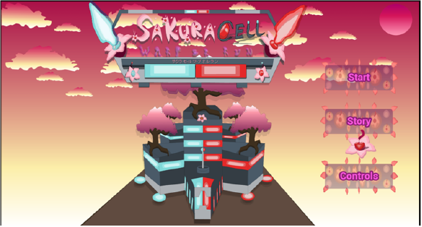
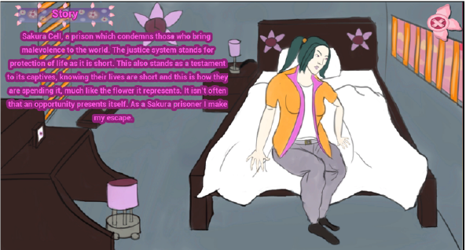
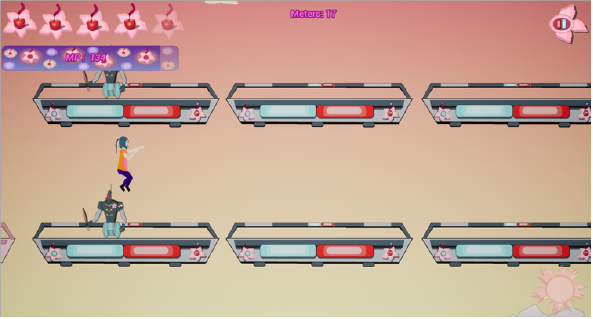
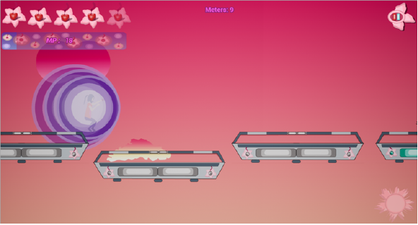
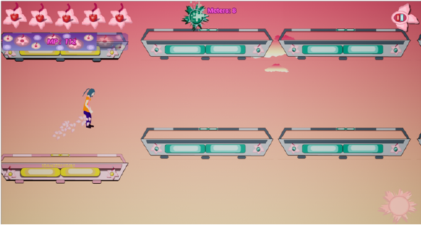

Gallery
Images
    
Gifs


Developed in Unreal Engine 4
A prototype and final year project, experimenting with touch controls to create various mechanics.
Experimented with 2D animation, 2D VFX via flipbooks, cooldowns and powerups.
Implemented UI to be operated via the users touch
The player will run automatically, the player has the ability to jump and teleport (teleport consumes MP on use) in terms of movement. Swiping up to jump, and tapping the screen will teleport the player to that location.
3 Pickups in build: Invincibility, Heal and Magnet
Collecting magic gems will increase the players maximum magic capacity (Every gem provides an additional 10 MP)
An endless runner mobile game, You play as a female Sakura. The Sakura's are prisoners within the Sakura cell. The vicinity is guarded by robotic personnel, each donning the Sakura blossom on them, as their symbol is said to represent life being short but beautiful. It is their job to keep fugitives from causing harm to the general populace. The playable character also knowing that a prison sentence can be long and her life is still in its youth, she plans to escape.